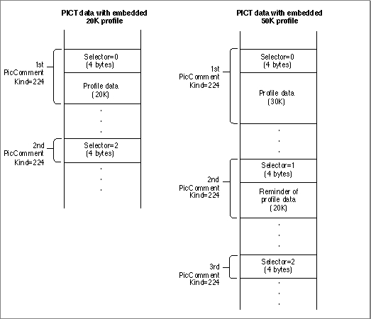

Embedding Profiles and Profile Identifiers
When the user creates and saves a document or picture containing a color image created or modified with your application, your application can provide for future color matching by saving--along with that document or picture--the profile for the device on which the image was created or modified. In addition to a profile--or instead of a profile--your application can save a profile identifier. A profile identifier is an abbreviated data structure that identifies, and possibly specifies the rendering intent for, a profile in memory or on disk.To get the system profile, your application can use the
CMGetSystemProfilefunction described in "Identifying the Current Default System Profile" (page 4-20) and in "ColorSync Manager Reference for Applications and Device Drivers" in Advanced Color Imaging Reference. "Searching for Profiles in the ColorSync(TM) Profiles Folder" (page 4-48) describes other functions your application can use to search for device profiles.When embedding source profiles or profile identifiers in the documents created by your application, you can store them in any manner that you choose. In the resource fork of the document file, for example, you may choose to have your application store one profile for an entire image, or a separate profile for every object in an image, or a separate profile identifier that points to a profile on disk for every device on which the user modified the image.
When embedding source profiles or profile identifiers in PICT file pictures, your application should use the
cmCommentpicture comment, which has akindvalue of 224 and is defined for embedded version 2.x profiles. This comment is followed by a 4-byte selector that describes the type of data in the comment. The following selectors are currently defined:Because the
dataSizeparameter of thePicCommentprocedure is a signed 16-bit value, the maximum amount of profile data that can be embedded in a single picture comment is 32,763 bytes (32,767 - 4 bytes for the selector).You can embed a larger profile by using multiple picture comments of selector type
cmContinueProfileSel. You must embed the profile data in consecutive order, and you must conclude the profile data by embedding a picture comment of selector typecmEndProfileSel. The ColorSync Manager provides theNCMUseProfileCommentfunction to automate the process of embedding profile information.Embedded Profile Format
Figure 4-7 shows how profile data is embedded in a PICT file picture as a series of picture comments. The illustration shows two embedded profiles. The first profile contains less than 32K of data, so its data can be stored in one picture comment with selector typecmBeginProfileSel. However, a second comment of selector typecmEndProfileSel, containing no data, concludes the embedded profile.The second embedded profile shown in Figure 4-7 has more than 32K of data, so it's data must be stored in two consecutive picture comments. The first comment has selector type
cmBeginProfileSel, while the second has typecmContinueProfileSel. If the profile were larger and required additional picture comments, each additional comment would have selector typecmContinueProfileSel. As with all embedded profiles, the final picture comment has selector typecmEndProfileSel.Figure 4-7 Embedding profile data in a PICT file picture

Embedding Different Profile Versions
For version 1.0 of the ColorSync Manager, you use picture comment typescmBeginProfileandcmEndProfileto begin and end a picture comment. ThecmBeginProfilecomment is not supported for ColorSync Manager version 2.x profiles; however, you can use thecmEndProfilecomment to end the current profile and begin using the system profile for both ColorSync 1.0 and 2.x. (Following acmEndProfilecomment, the ColorSync Manager reverts to the system profile.) You use thecmEnableMatchingandcmDisableMatchingpicture comments to begin and end color matching in both ColorSync 1.0 and 2.x. See Inside Macintosh: Imaging With QuickDraw for more information about picture comments.The NCMUseProfileComment Function
The ColorSync Manager provides theNCMUseProfileCommentfunction to automate the process of embedding a profile or profile identifier. This function generates the picture comments required to embed the specified profile or identifier into the open picture. It calls the QuickDrawPicCommentfunction with a picture commentkindvalue ofcmCommentand a 4-byte selector that describes the type of data in the picture comment: cmBeginProfileSel to begin the profile, cmContinueProfileSel to continue, cmEndProfileSel to end the profile, or cmProfileIdentifierSel for a profile identifier. For a profile, if the size in bytes of the profile and the 4-byte selector together exceed 32 KB, this function segments the profile data and embeds the multiple segments in consecutive order using selector cmContinueProfileSel to embed each segment.For embedded profiles or profile identifiers to work correctly, the currently effective profile must be terminated by a picture comment of
kindcmEndProfileafter drawing operations using that profile are performed. If you do not specify a picture comment to end the profile, the profile will remain in effect until the next embedded profile is introduced with a picture comment ofkindcmBeginProfile. It is good practice to always pair use of thecmBeginProfileandcmEndProfilepicture comments. When the ColorSync Manager encounters acmEndProfilepicture comment, it restores use of the system profile for matching until it encounters anothercmBeginProfilepicture comment.In addition to embedded profiles, an image may contain embedded profile identifiers, which are stored with the selector cmProfileIdentifierSel. For more information on profile identifiers, see "Searching for a Profile That Matches a Profile Identifier" (page 4-75), and "Profile Identifier Structure" in Advanced Color Imaging Reference.
- IMPORTANT
- The
NCMUseProfileCommentfunction does not automatically terminate the embedded profile or profile identifier with acmEndProfilepicture comment. You must add a picture comment ofkind cmEndProfilewhen the drawing operations to which the profile applies are complete. Otherwise, the profile remains in effect until the next embedded profile with a picture comment ofkind cmBeginProfileis encountered.Listing 4-6 shows how to embed a profile in a picture file. The
MyPreprendProfileToPicHandlefunction creates a new picture, embeds the profile for the device used to create the picture, then draws the picture. The caller passes a reference for the profile as theprofparameter. AfterMyPreprendProfileToPicHandlecalls theNCMUseProfileCommentfunction to embed the profile, it calls its ownMyEndProfileCommentfunction to embed a comment ofkindcmEndProfile, ensuring that the profile is properly terminated.Listing 4-6 Embedding a profile by prepending it before its associated picture
CMError MyPrependProfileToPicHandle ( PicHandle pict, PicHandle *pictNew, CMProfileRef prof, Boolean embedAsIdentifier) { OSErr err = noErr; CGrafPtr savePort; GDHandle saveGDev; GWorldPtr smallOff; Rect pictRect; unsigned long flags; if (prof==nil) return paramErr; /* Determine whether to embed as identifier or whole profile */ if (embedAsIdentifier) flags = cmEmbedProfileIdentifier; else flags = cmEmbedWholeProfile; /* create a temporary graphics world */ err = NewSmallGWorld(&smallOff); if (err) return err; GetGWorld(&savePort, &saveGDev); SetGWorld(smallOff, nil); pictRect = (**pict).picFrame; ClipRect(&pictRect); /* important: set clipRgn */ /* create a new picture */ *pictNew = OpenPicture(&pictRect);/* start recording */ err = NCMUseProfileComment(prof,flags); DrawPicture(pict, &pictRect); MyEndProfileComment(); /* routine shown below */ ClosePicture(); if (err) KillPicture(*pictNew); SetGWorld(savePort, saveGDev); DisposeGWorld(smallOff); return err; }Here is the application-definedMyEndProfileCommentfunction called by MyPrependProfileToPicHandle to add thecmEndProfilepicture comment to terminate the profile:void MyEndProfileComment (void) { PicComment(cmEndProfile, 0, 0); }